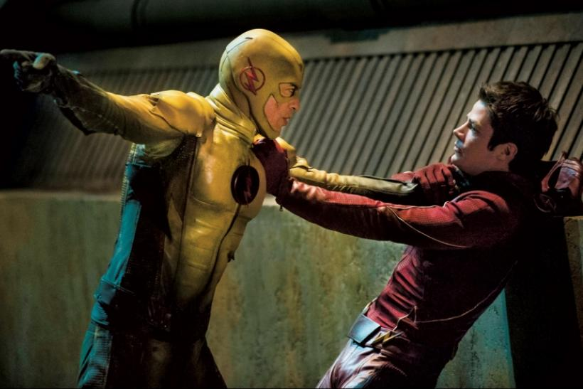
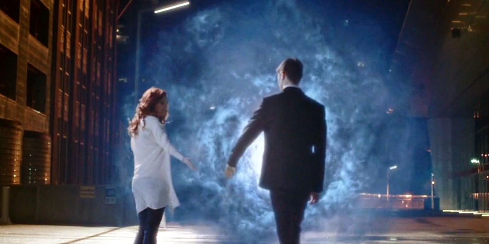

Season 1 finale "Fast Enough".
Een verbitterde Barry vroeg Eobard naar zijn afkomst en motivaties. Eobard vertelde Barry dat hij de toekomstige Barry haatte om onbekende redenen, ook al was hij tot op zekere hoogte om de huidige Barry gaan geven.
In het jaar 2024 leerde hij de ware identiteit van The Flash als Barry Allen kennen en reisde hij terug in de tijd om de jongere Barry te vermoorden. Hij werd echter gevolgd door de Future Barry en ze vochten in zijn huis. Om hem te beschermen, greep de toekomstige Barry zijn jongere zelf en trok zich twintig straten verderop terug. Een woedende Eobard doodde vervolgens Nora in de hoop dat het trauma zou voorkomen dat de jongere Barry zijn lot zou nastreven en de Flash zou worden. Omdat Eobard echter kort daarna zijn krachten verloor en eeuwen voor zijn eigen tijd strandde, werd hij gedwongen om, ironisch genoeg, de vijand te creëren die hij probeerde te vernietigen.

Barry, Joe en Tracy zijn er kapot van over de dood van Iris.
Maar wanneer HR-drumsticks uit het lijk van Iris vallen, hijgt ze naar adem en neemt de vermomming weg: Savitar die H.R. heeft neergestoken Iris draagt de look van H.R. en onthult dat ze leeft.
Het is onthuld dat H.R. achter Savitar ging nadat hij Iris van Earth-2 had ontvoerd. Hij vond zijn hol en wist Iris te bevrijden.
Maar ze werden gepakt door Killer Frost en ze wisselden van plaats, zonder dat Frost of Savitar de verschuiving besefte. H.R. vraagt Barry om Cisco iets te vertellen, vlak voordat hij sterft, waardoor Tracy er kapot van wordt.
Savitar vluchtte echter met de Speed Force Bazooka.
In het bos staat Killer Frost op het punt Cisco te vermoorden, wanneer Savitar arriveert en haar vertelt dat ze Cisco nodig hebben om iets voor hen te bouwen.
Hij heeft dan nieuwe herinneringen, en ziet dat Iris nog in leven is, met H.R. die haar plaats heeft ingenomen.